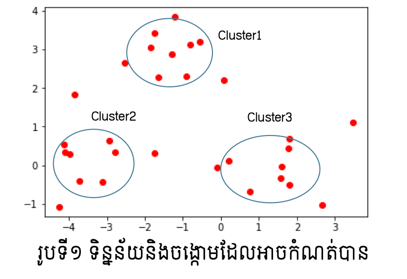
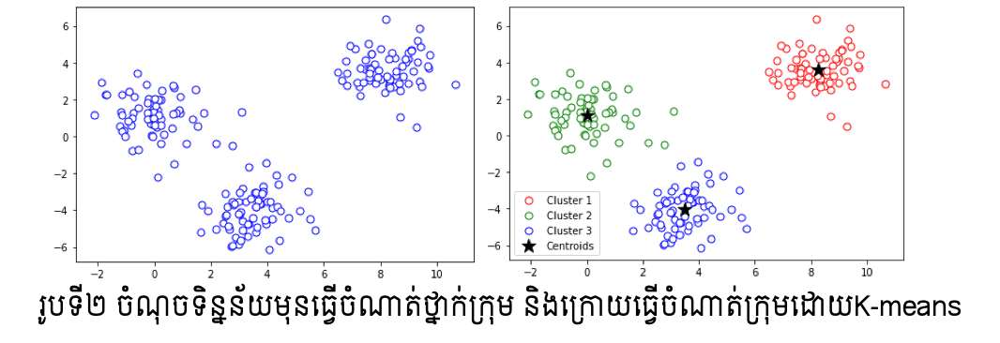
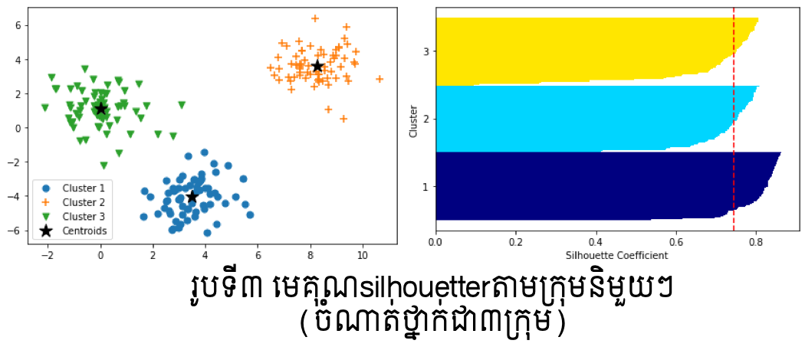
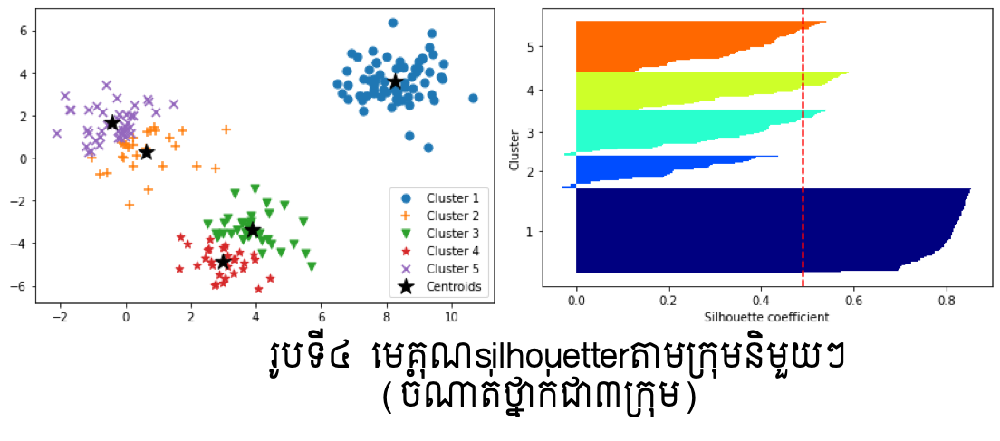
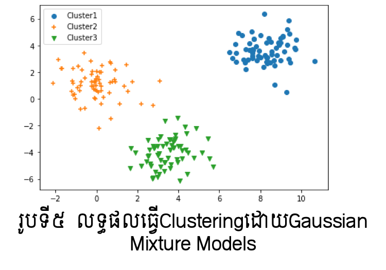

Clustering¶
ក្នុងបញ្ហានៃការធ្វើចំណាត់ថ្នាក់ក្រុមទិន្នន័យដែលយើងបានណែនាំក្នុងអត្ថបទមុនៗ ទិន្នន័យនិមួយៗជាគូ\(\left(\pmb{x},y\right)\)ពោលគឺយើងប្រើទិន្នន័យដែលមានចម្លើយជាមុនដើម្បីបង្រៀនដល់ម៉ូឌែលរបស់យើងដែលហៅថា Supervised Learning។ ផ្ទុយពីនេះ ប្រភេទបញ្ហាក្នុង Unsupervised Learningយើងមានតែទិន្នន័យ\(\pmb{x}\) តែប៉ុណ្ណោះ។ ក្នុងករណីនេះការប្រមូលផ្តុំទិន្នន័យដែលមានលក្ខណៈដូច ឬស្រដៀងគ្នាជាក្រុមឬជាចង្កោមដោយផ្អែកលើលក្ខណៈបង្ហាញដោយផ្ទាល់ឬប្រយោលរបស់ទិន្នន័យត្រូវបានហៅថាជាClustering។ ក្នុងអត្ថបទនេះយើងនឹងណែនាំអំពីវិធីសាស្រ្តក្នុងការដោះស្រាយបញ្ហាបែបនេះ។
ចង្កោម(Cluster)ទិន្នន័យនិងចម្ងាយ¶
ការធ្វើចំណាត់ក្រុមទិន្នន័យដែលគ្មានសញ្ញាសម្គាល់ប្រភេទជាក្រុមដូចក្នុងរូបទី១គឺជា គោលដៅចំបងនៃការសិក្សាក្នុងUnsupervised Learning។ ក្រុមដែលប្រមូលបានក្នុងទិន្នន័យនោះហៅថាចង្កោមទិន្នន័យ(Cluster) ហើយដំណើរការនៃការប្រមូលជាក្រុមបែបនេះហៅថា Clustering។
ដើម្បីធ្វើចំណាត់ក្រុមទិន្នន័យបែបនេះ គោលគំនិតសំខាន់គឺការស្វែងរកលក្ខណៈរួមឬប្រហាក់ប្រហែលរវាងទិន្នន័យ។ ពោលគឺ ទិន្នន័យដែលមានលក្ខណៈស្រដៀងគ្នាលើរង្វាស់ណាមួយអាចប្រមូលផ្តុំជាចង្កោមបាន។ ហេតុនេះការកំណត់និយមន័យជាក់លាក់នៃលក្ខណៈរួមឬប្រហាក់ប្រហែលនេះជាដំណើរការសំខាន់ក្នុងការចាប់ផ្តើម។ នៅទីនេះយើងកំណត់យកចម្ងាយជារង្វាស់សម្រាប់បង្ហាញភាពស្រដៀងគ្នានៃទិន្នន័យ។ ដូច្នេះយើងនឹងធ្វើការពិនិត្យលើនិយមន័យនៃចម្ងាយដូចខាងក្រោម។

ចម្ងាយ Euclid¶
សន្មតថា \(\pmb{x},\pmb{y}\in\mathbb{R}^d\) ជាពីរចំណុចក្នុងលំហទិន្នន័យ។
បើ \(\pmb{x}=\left(\begin{matrix}x_1&\cdots&x_d\\\end{matrix}\right)^\top,\pmb{y}=\left(\begin{matrix}y_1&\cdots&y_d\\\end{matrix}\right)^\top\) នោះ ចម្ងាយEuclid រវាងចំណុចទាំងពីរ នេះអាចកំណត់បានដូចខាងក្រោម។
ចម្ងាយ Manhattan¶
សន្មតថា \(\pmb{x},\pmb{y}\in\mathbb{R}^d\) ជាពីរចំណុចក្នុងលំហទិន្នន័យ។
បើ \(\pmb{x}=\left(\begin{matrix}x_1&\cdots&x_d\\\end{matrix}\right)^\top,\pmb{y}=\left(\begin{matrix}y_1&\cdots&y_d\\\end{matrix}\right)^\top\) នោះ ចម្ងាយ Manhattan រវាងចំណុចទាំងពីរនេះអាចកំណត់បានដូចខាងក្រោម។
ភាពស្រដៀងគ្នាកូស៊ីនុស¶
សន្មតថា \(\pmb{x},\pmb{y}\in\mathbb{R}^d\) ជាពីរចំណុចក្នុងលំហទិន្នន័យ។ ដោយប្រើមុំផ្គុំដោយវ៉ិចទ័រចំណុចទាំងពីរយើងអាចកំណត់ថាវ៉ិចទ័រចំណុចទាំងពីរមានទិសដៅដូចគ្នានៅពេលរង្វាស់មុំនោះកាន់តែតូច។ ហេតុនេះការប្រើតម្លៃកូស៊ីនុសនៃមុំផ្គុំដោយវ៉ិចទ័រចំណុចទាំងពីរអាចប្រើជារង្វាស់ប្រៀបធៀបលក្ខណៈស្រដៀងគ្នានៃទិន្នន័យបាន។ បើ \(\left(\pmb{x},\pmb{y}\right)\) ជាផលគុណស្កាលែនៃវ៉ិចទ័រទាំងពីរ នោះ ភាពស្រដៀងគ្នា កូស៊ីនុសរវាងចំណុចទាំងពីរនេះអាចកំណត់បានដូចខាងក្រោម។
មេគុណ Jaccard¶
ក្នុងករណីដែលទិន្នន័យបង្ហាញជាទម្រង់សំណុំ ពោលគឺ \(\pmb{x}=\left\{x_1,\ldots,x_d\right\},\ \pmb{y}=\left\{y_1,\ldots,y_d\right\} \) នោះកម្រិតស្រដៀងគ្នានៃទិន្នន័យទាំងពីរអាចកំណត់បានដោយមេគុណ Jaccard ដូចខាងក្រោមដែល \(\left|\pmb{a}\right|\) ជាកាឌីណាល់(ចំនួនធាតុ)នៃសំណុំ\( \pmb{a} \)។
KL divergence¶
ក្នុងករណីដែលទិន្នន័យបង្ហាញជាទម្រង់អនុគមន៍បំណែងចែកប្រូបាប \(p\left(x\right),\ p\left(y\right) \) នោះកម្រិតស្រដៀងគ្នានៃទិន្នន័យទាំងពីរអាចកំណត់បានដូចខាងក្រោមដែល ។
កម្រិតស្រដៀង KL មិនមានលក្ខណៈឆ្លុះឡើយ ពោលគឺ\(KL\left(p||\ q\right)\neq KL\left(q||\ p\right)\)។ ហេតុនេះក្នុងករណីខ្លះJensen-Shannon Divergence ត្រូវបានប្រើជំនួស។
វិធីសាស្រ្ត K-means¶
សន្មតថាយើងមានចំណុចទិន្នន័យ \(\pmb{x}_1,\ldots,\pmb{x}_N\in\ \mathbb{R}^d\)។ យើងចង់ធ្វើចំណាត់ថ្នាក់ក្រុមដោយ ស្វ័យប្រវត្តិលើចំណុចទិន្នន័យទាំងនេះជា\(K\) ក្រុម \(C_1,\ldots,C_K\)។ ដូចដែលបង្ហាញខាងលើទិន្នន័យនិមួយៗមិនមានភ្ជាប់ជាមួយនូវកំណត់សម្គាល់(label)អំពីក្រុមដែលខ្លួនស្ថិតនៅឡើយ។ ហេតុនេះ ការធ្វើចំណាត់ក្រុមត្រូវពិនិត្យលើកម្រិតស្រដៀងគ្នានៃទិន្នន័យដោយផ្អែកលើចម្ងាយរវាងគ្នា។
ដំបូង យើងកំណត់ហៅចំណុចតំណាងនៃក្រុមដោយ \(\pmb{\mu}_1,\ldots,\pmb{\mu}_K\in\mathbb{R}^d\)។ ចំណុចតំណាងទាំងនេះត្រូវបានហៅថា Centroids។ ចំណុចទិន្នន័យដែលនៅជិតចំណុចតំណាង\(\pmb{\mu}_k \)នឹងត្រូវចាត់ចូលជាសមាជិកនៃក្រុម\(C_k\)។
បើចម្ងាយរវាងពីរចំណុចទិន្នន័យកំណត់ដោយ \(d\left(\pmb{x}_1,\pmb{x}_2\right) \)នោះកម្រិតគម្លាតសរុបរវាងក្រុមនិមួយៗត្រូវបានកំណត់ដូចខាងក្រោម។ ការធ្វើចំណាត់ថ្នាក់ក្រុមដែលល្អត្រូវមានតម្លៃនៃកម្រិតគម្លាតសរុបរវាងក្រុមតូចបំផុត។ ការធ្វើចំណាត់ថ្នាក់ក្រុមបែបនេះហៅថា វិធីសាស្រ្ត K-means។
ក្នុងការបកស្រាយខាងក្រោម យើងកំណត់ប្រើចម្ងាយ Euclid។ តាង \(\left|C_k\right|\) ជាចំនួនចំនុចទិន្នន័យក្នុងក្រុម \(C_k\) នោះវ៉ិចទ័រមធ្យមនៃចំណុចទិន្នន័យក្នុងក្រុមនេះកំណត់ដោយ\({\bar{\pmb{x}}}_k\)។
ចំពោះក្រុម \(C_1,\ldots,C_K\) យើងបានទំនាក់ទំនងខាងក្រោម។ ហេតុនេះ បើយើងកំណត់យកចំណុចតំណាងនៃក្រុមនិមួយ \(\pmb{\mu}_k\) ដោយវ៉ិចទ័រមធ្យមនៃចំណុចទិន្នន័យក្នុងក្រុម នោះយើងនឹងបានតម្លៃនៃកម្រិតគម្លាតសរុបរវាងក្រុមតូចបំផុត។
ដោយផ្អែកលើទំនាក់ទំនងនេះ ដំណើរការនៃវិធីសាស្រ្តK-meansចំពោះចម្ងាយEuclidអាចសរុបដូចខាងក្រោម។
Input : ចំណុចទិន្នន័យ \(\pmb{x}_1,\ldots,\pmb{x}_N\in\ \mathbb{R}^d\), ចំនួនក្រុម \(K\)
Initialization : កំណត់តម្លៃចាប់ផ្តើមនៃចំណុចតំណាង \(\pmb{\mu}_1,\ldots,\pmb{\mu}_K\in \mathbb{R}^d\)
Step-1 : អនុវត្តជំហាន(1),(2),(3)ខាងក្រោមដដែលៗ
ផ្លាស់ប្តូរសមាជិកក្រុម \(C_1,\ldots,C_K\)(សន្មតថាទិន្នន័យនិមួយៗត្រូវស្ថិតនៅក្នុងក្រុមណាមួយក្នុងចំណោមនេះ)
ផ្លាស់ប្តូរតម្លៃនៃចំណុចតំណាង \(\pmb{\mu}_1,\ldots,\pmb{\mu}_K \pmb{\mu}_k=\frac{1}{\left|C_k\right|}\sum_{\pmb{x}\in C_k}\pmb{x}\ \ \left(k=1,\ldots,K\right)\)
បន្តទៅStep-2នៅពេលដែលតម្លៃនៃកម្រិតគម្លាតសរុបរវាងក្រុមរួម(ស្មើឬក្បែរសូន្យ)
Step-2 : យកការធ្វើចំណាត់ថ្នាក់ក្រុម \(C_1,\ldots,C_K\) ជាចម្លើយ
ជាមួយPython អ្នកអាចប្រើ sklearn.cluster បាន។
from sklearn.cluster import KMeans
KM = KMeans(n_clusters=3, init='random', n_init=10, max_iter=500, tol=1e-6)
y_KM = KM.fit_predict(X)

ក្នុងការអនុវត្តវិធីសាស្រ្តK-means ការកំណត់តម្លៃដំបូងនៃចំណុចតំណាងមានឥទ្ធិពលខ្លាំងលើលទ្ធផលនៃការធ្វើចំណាត់ក្រុម។ជាទូទៅការកំណត់តម្លៃដំបូងនេះធ្វើឡើយដោយតម្លៃចៃដន្យ។
ក្នុងករណីsklearn.cluster.KMeans យើងអាចកំណត់ដោយ init=’random’ ។ ប៉ុន្តែករណីខ្លះការកំនត់ដោយចៃដន្យនេះអាចនឹងបានលទ្ធផលចំណាត់ក្រុមដែលមិនល្អ។
ដើម្បីដោះស្រាយបញ្ហានេះ ការប្រើ K-means++ អាចសម្រួលបាន។ ក្នុងK-means++ វិធីសាស្រ្តK-meansត្រូវបានអនុវត្តដោយចៃដន្យជាច្រើនលើកទៅលើទិន្នន័យដែលមាន រួចតម្លៃមធ្យមនៃកម្រិតគម្លាតសរុបនឹងត្រូវធ្វើអប្បបរមាកម្ម។
ករណីsklearn.cluster.KMeans យើងអាចកំណត់ដោយ init=’k-means++’ ។
ការវាយតម្លៃClusteringដោយប្រើមេគុណSilhouette¶
ក្រៅពីការសិក្សាលើតម្លៃនៃកម្រិតគម្លាតសរុបរវាងក្រុមនិមួយៗ ការវិភាគលើកម្រិតកំហាប់នៃ ទិន្នន័យក្នុងក្រុម(ភាពជិតស្និតក្នុងក្រុម)ដូចជា Silhouetter Analysis ក៏ត្រូវបានប្រើប្រាស់សម្រាប់វាយតម្លៃលើ Clustering ផងដែរ។ ក្នុង Silhouetter Analysis កម្រិតកំហាប់នៃការប្រមូលផ្តុំរបស់ទិន្នន័យក្នុងក្រុមនិមួយៗត្រូវបានគណនាដោយមេគុណsilhouetterនិងបង្ហាញជាក្រាប។ មេគុណ silhouetter នៃទិន្នន័យ \(\pmb{x}_i : s^{(i)}\) អាចគណនាបានតាម៣ជំហានខាងក្រោម។
កំណត់កម្រិតកំហាប់ប្រមូលផ្តុំនៃក្រុម \(a^{\left(i\right)}\) ដោយតម្លៃមធ្យមនៃចម្ងាយរវាងចំណុចទិន្នន័យ \(\pmb{x}_i\) និងចំណុចទិន្នន័យដទៃទៀតក្នុងក្រុមជាមួយគ្នា។
កំណត់កម្រិតគម្លាតរវាងក្រុមជិតបំផុត \(b^{\left(i\right)}\) ដោយតម្លៃមធ្យមនៃចម្ងាយរវាងចំណុចទិន្នន័យ \(\pmb{x}_i\) និងចំណុចទិន្នន័យទាំងអស់នៅក្នុងក្រុមដែលជិតនឹងក្រុមរបស់ខ្លួនបំផុត។
កំណត់តម្លៃមេគុណ silhouetterដោយ \(s^{\left(i\right)}=\left(b^{\left(i\right)}-a^{\left(i\right)}\right)/\max{\left\{a^{\left(i\right)},b^{\left(i\right)}\right\}}\)


ក្នុងរូបទី៣និងទី៤ ខាងលើបន្ទាត់ក្រហមបង្ហាញតម្លៃមធ្យមនៃមេគុណsilhouetterលើក្រុមនិមួយៗក្នុងករណីចំនួនក្រុមត្រូវបានកំណត់ជា៣និង៥។ Clustering ដែលល្អនឹងមានតម្លៃនៃមេគុណsilhouetterខិតទៅជិត1។ ក្នុងរូបខាងលើ យើងអាចឃើញថាករណីClustering ដោយ៣ក្រុមមានមេគុណsilhouetterប្រសើរជាងបើប្រៀបធៀបនឹងករណី៥ក្រុម។
Gaussian Mixture Models Clustering¶
ក្នុងវិធីសាស្រ្ត K-means យើងមិនបានធ្វើកំណត់លក្ខខណ្ឌសន្មតណាមួយលើរបាយ បំណែងចែកនៃទិន្នន័យឡើយ។ ពេលនេះយើងសន្មតថាទិន្នន័យទាំងអស់គឺស្ថិតក្នុងរបាយបំណែងចែកប្រូបាបមួយ។ ក្នុងករណីនេះយើងកំណត់យកបំណែងចែកនរម៉ាល់ និងម៉ូឌែលបន្សំនៃនរម៉ាល់ពោលគឺ Gaussian Mixture Models ដើម្បីដោះស្រាយបញ្ហាClustering។
សន្មតថាក្រុមនិមួយត្រូវបានកំណត់ដោយបំណែងចែកប្រូបាបQហើយទិន្នន័យក្នុងក្រុមនិមួយៗត្រូវបានកំណត់ដូចខាងក្រោម។
ពីទិន្នន័យយើងនឹងធ្វើការកំណត់បំណែងចែក \(Q,\ p_k\) ដែលនឹងនាំឱ្យយើងអាចកំណត់ចំណាត់ថ្នាក់ក្រុមសម្រាប់ទិន្នន័យនិមួយៗបាន។ ក្នុងម៉ូឌែលបន្សំ Mixture Models, ចំពោះបំណែងចែកពហុធាQ និង បំណែងចែកនរម៉ាល់ \(p_k\left(\pmb{x}\right):N_d\left(\pmb{\mu}_k,\mathbf{\Sigma}_k\right)\)បើយកប្រូបាបដែលទិន្នន័យជាសមាជិកក្រុម\(C_k\)ដោយ\(q_k\)នោះ ម៉ូឌែលស្ថិតិនៃទិន្នន័យ\(\pmb{x}\) អាចកំណត់ដោយទម្រង់ខាងក្រោម។
ដើម្បីកំណត់ប៉ារ៉ាម៉ែត្រនៃម៉ូឌែលនេះយើងអាចសិក្សាលើអនុគមន៍លោការីតនៃកម្រិតសាកសមនៃទិន្នន័យ(log-likelihood function)បាន ពោលគឺ
ក្នុងការដោះស្រាយបញ្ហាអតិបរមាកម្មនៃអនុគមន៍ខាងលើនេះ EM algorithm ត្រូវបានប្រើ។ នៅទីនេះយើងនឹងមិនលំអិតអំពីEM algorithmឡើយ ប៉ុន្តែយើងណែនាំអំពីការប្រើប្រាស់វាក្នុងការធ្វើClustering។
ជាមួយPython អ្នកអាចប្រើ sklearn.mixture.GaussianMixture បាន។
from sklearn.mixture import GaussianMixture
model = GaussianMixture(3).fit(X)
classes = model.predict(X)
